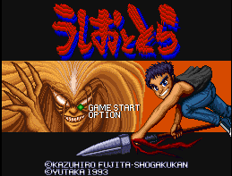

Ushio to Tora - SNES Games

Controls
- A button: Attack
- B button: Jump
- X button: [not used]
- Y button: Attack
- L button: [not used]
- R button: [not used]
- Start: Pause
- Select: [not used]
Control either Ushio or Tora as you battle your way through the demonic hordes. No other
information available at this time.
Anime Video Game Resource Center © 1998 by Luis A. Cruz